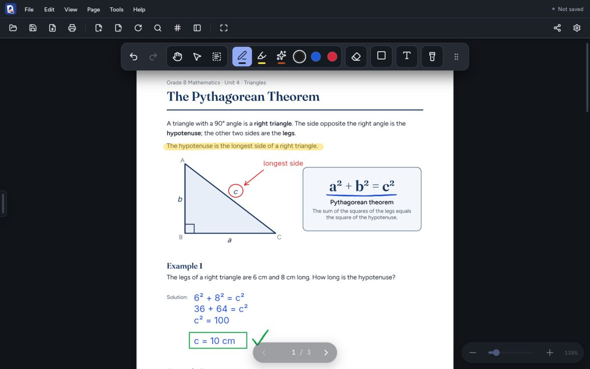

Open your PDF, pick up your pen, teach your lesson. This document is a short tour of every Inken PDF feature, and the best way to learn is to write on it while you read. The Try it boxes are there for that.
Pick the pen and write your name here. Then undo it with Ctrl+Z.
In Inken the drawing tools are not on a fixed bar: they live in the tool box floating over the document. When you are not using it, it fades so it never hides the page.

File → Open… or Ctrl+O. Recent files wait on the start screen with thumbnails.
Drop a PDF on the window. Drop an image and it is added to the open page.
Ctrl+N opens a blank notebook; its pages can be grid, lined, dotted or a coordinate plane.
Inken asks for the password. For encrypted or signed files, drawings are saved to a separate copy.
Tap a tool to pick it. Tap it once more to open its color and thickness. The panel closes by itself when you start drawing.
Six colors and up to four custom colors. With a pressure-sensitive pen, lines get thicker as you press.
Swipe over the text; it stays readable underneath. Yellow, green, pink, blue.
Point things out: what you write fades in a few seconds and never enters the document.
Stroke erases the whole line you touch, Pixel only the part you pass over. Your pen's eraser end and side button erase too.
The hypotenuse is the side opposite the right angle, and the longest side of a right triangle.
Write with the pen and try the different thicknesses; then compare the two eraser modes.
Line, arrow, rectangle, ellipse and coordinate plane. Hold Shift for squares, circles and 15° steps.
Tap the page and type; Enter starts a new line. Tap existing text to edit it. Math signs such as √ π ≤ ∞ are all there.
In the Shape panel: ruler, set square, protractor, compass. They sit on the page and your pen follows their edges.
Paste a copied image or screenshot with Ctrl+V, insert one from a file, or drag it onto the window.
Draw the line y = 2x − 1.
Measure AB with the ruler, find the angle with the protractor, draw a circle around A with the compass.
Type here with the Text tool: a² + b² = c²
Nothing is final: every step can be undone, even after saving. You can move, resize and recolor the drawings you select.
Tap or draw a box to select. Drag to move (even to another page), resize from a corner, press Delete to remove.
Appears above the selection: change the color, set the opacity of text and images, copy, delete.
Double-tap an image: crop (free, 1:1, 4:3, 16:9), rotate, set its size in cm, change its opacity. The original is kept; Reset takes you back.
Switch to Text in the Select tool's panel to select and copy the PDF's own text.
Ctrl+Z · Ctrl+Y. At the top of the tool box.
Ctrl+F: matches are marked on the page; step through them with next / previous.
Draw three things: a star, an arrow, a word. Select two of them together, move them right and make them red. Then undo it all.
For drawing your students' attention to the right part of the page on a smart board or projector.
Light up one part of the page and dim the rest. Drag the dimmed area to move the light, resize it from its edge, and keep writing inside it.
Cover the page and pull it down to reveal it line by line; keep the answer for last. Esc closes it.
The menus hide; only the page and the floating boxes remain.
The dark theme darkens the interface and keeps the page white. Night mode darkens the page itself too, keeping its colors.
View → Interface size: Normal or Large. Buttons and labels stay readable from further away.
Drag the page to scroll; pinch with two fingers to zoom. Use the bar on the right to move quickly through a long document.
Open the curtain and pull it down to show the steps one by one.
| Question | The legs of a right triangle are 6 cm and 8 cm. How long is the hypotenuse? |
| Step 1 | 6² + 8² = c² |
| Step 2 | 36 + 64 = c² |
| Step 3 | c² = 100 |
| Answer | c = 10 cm |
Turn on the spotlight, move the light onto the “Answer” row above and write inside it.
Add blank pages as the lesson goes on, rotate or delete the wrong ones, and find your way through long documents with the contents.
The tab on the left: thumbnails and the PDF's table of contents. Select several thumbnails to delete them together.
Blank, grid, dotted, lined or coordinate plane; white, black or manila paper; portrait or landscape. Before or after.
Ctrl+R right, Ctrl+Shift+R left. Drawings turn with the page.
Ctrl+G or tap the number in the page navigator. PgUp / PgDn, Home / End.
Insert a grid page after this one and draw a table on it. Then open the page panel and find the new page.
When you save, drawings are written into the PDF file itself and show up in any PDF reader. Open it in Inken again and they are still editable.
Your original PDF is never touched: the first save writes name_inken.pdf next to it, later saves go there. Save as Ctrl+Shift+S.
A PDF with the drawings, an editable PDF or page images. Hide a color for a student copy: answers in red are left out.
Preview, printer, copies, page range, fit / actual size, drawings on or off; color, two-sided, paper, orientation.
Attaches the file to a new email; on a phone, the system share sheet opens.
Unsaved drawings are backed up every minute; if the app closes unexpectedly, you can restore them on the next start.
Title, author, page size, PDF version, password and signature details.
On a phone the tools sit in a rack at the bottom of the screen. The rack starts closed, so the document opens for reading; the button in the top bar opens it. Tapping the selected tool again opens its options from the bottom; the menus slide in from the left with ☰.
Inken PDF collects no data and never connects to the internet; no account, no ads. Your settings, recent files and backups stay on your device.
| Tools | |
|---|---|
| P | Pen |
| H | Highlighter |
| L | Vanishing pen |
| E | Eraser |
| V | Select |
| G | Shape |
| T | Text |
| Space | Hold: pan for a moment |
| Shift | While drawing a shape: square, circle, 15° |
| S · C | Spotlight · Curtain |
| Esc | Close the panel, selection or cover; leave full screen |
| Edit | |
| Ctrl+Z | Undo |
| Ctrl+Y | Redo |
| Ctrl+X C V | Cut · Copy · Paste (images too) |
| Ctrl+A | Select all |
| Delete | Delete selection |
| Ctrl+F | Search the document |
| File | |
|---|---|
| Ctrl+N | New |
| Ctrl+O | Open |
| Ctrl+S | Save |
| Ctrl+Shift+S | Save as |
| Ctrl+P | |
| Ctrl+D | Document properties |
| Ctrl+W | Close document |
| Ctrl+, | Settings |
| Pages and view | |
| PgUp · PgDn | Previous · next page |
| Home · End | First · last page |
| Ctrl+G | Go to page |
| Ctrl+R | Rotate right (left with Shift) |
| Ctrl+= · Ctrl+− | Zoom in · out |
| Ctrl+0 | Fit page |
| Ctrl+1 · Ctrl+2 | Actual size · fit width |
| Ctrl + wheel | Zoom in / out |
| F11 | Full screen |
Inken PDF is free software (GPL-3.0-or-later). Source code, releases and feedback: github.com/okolyigit/inken-pdf · Contact: ockyapps@gmail.com